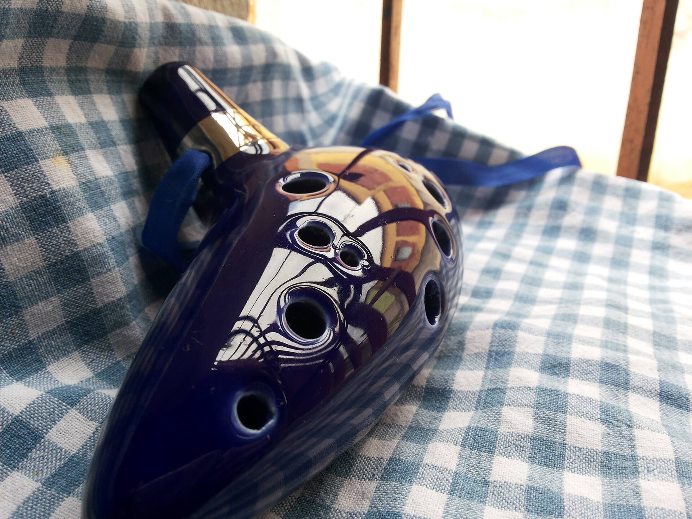
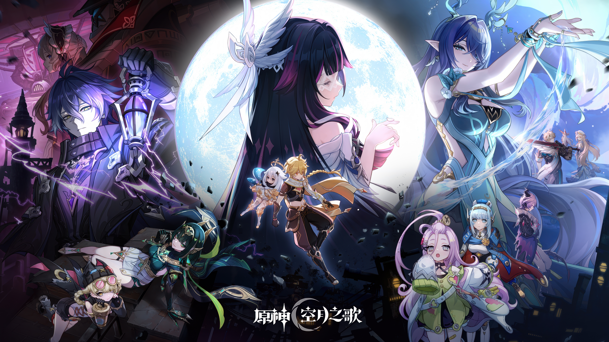

AVENTURA
The Legend of Zelda
Explore a história, os personagens e os segredos de Ocarina of Time.
Explorar jogo →Conheça curiosidades, segredos e histórias fascinantes dos seus jogos favoritos.

Explore a história, os personagens e os segredos de Ocarina of Time.
Explorar jogo →
Descubra mais sobre uma história que carrega um mundo vivo de Vice City. Com sua dupla viva um mundo desafiante e cruel de Miame.
Explorar jogo →
Descubra a história, os segredos, as criaturas e as curiosidades escondidas no mundo de blocos mais famoso dos videogames.
Explorar jogo →
Explore o continente de Teyvat, domine os sete elementos e desvende os segredos dos deuses e das nações nesta jornada épica.
Explorar jogo →Uma nova aventura será apresentada aqui.
O Além do Jogo é um projeto dedicado a explorar curiosidades, histórias, personagens e detalhes fascinantes do universo dos videogames.
Nosso objetivo é compartilhar conhecimento e apresentar aspectos dos jogos que muitas vezes passam despercebidos pelos jogadores.